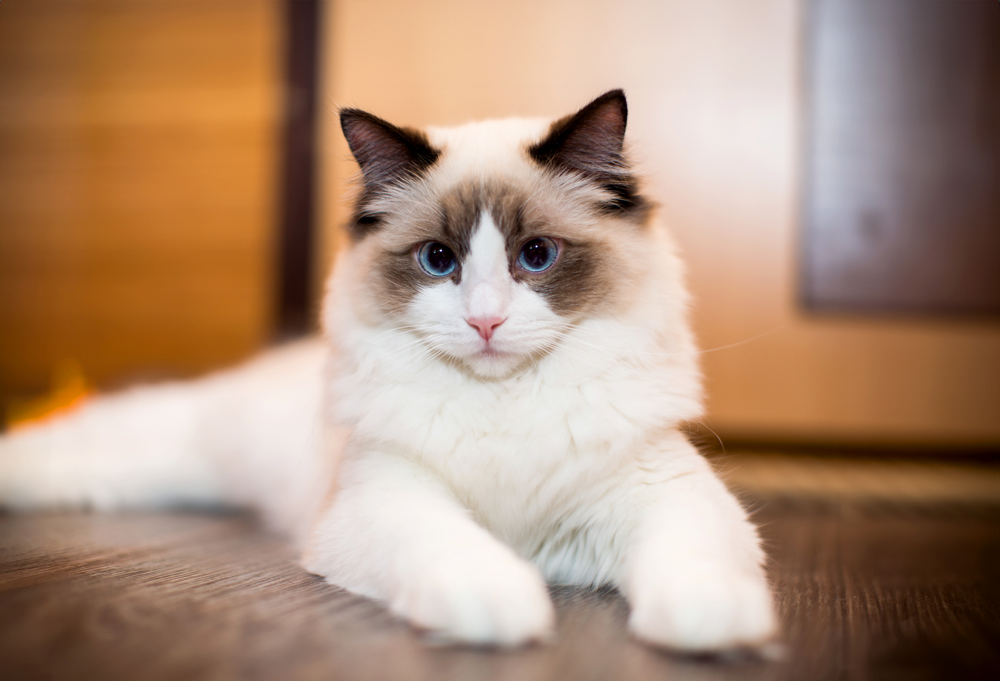
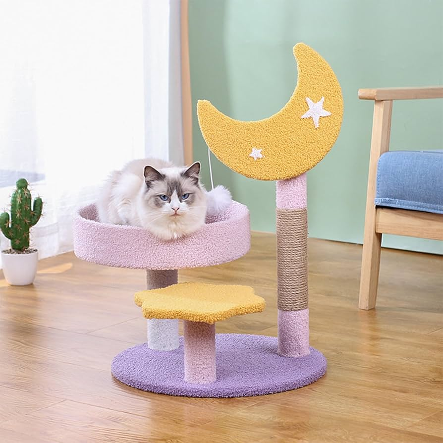
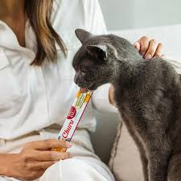
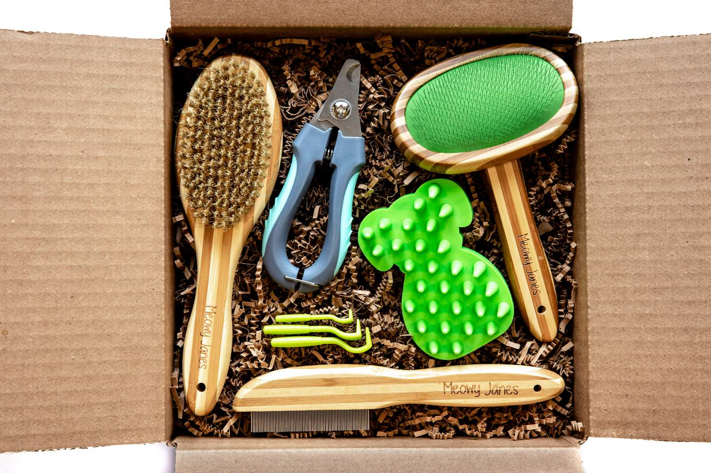
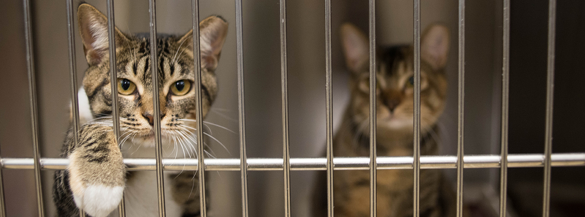
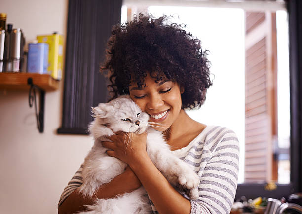

Discover Tips for Cats
To people who haven’t had cats, cats may seem aloof and not really show affectionate actions. But cats are actually quite loving and affectionate. The National Library of Medicine published an article about the benefits of cats for your health. They state cats have been linked to reduced blood pressure and negative emotions, among other things.
Below are some tips and necessities for caring for a cat, as well as more reasons why cats can be wonderful friends. So whether you’re a new cat owner or perhaps have had cats for years, you may learn more about:
- grooming tools
- food and treats
- donating to cats


Cats can reduce loneliness with their playful actions and rubbing against you for pets. After a long day, coming home to that friend would be a de-stressor.
This healthline article states cats ...provide companionship,
decrease loneliness and anxiety, improve mood, and even cardiovascular health, among other things.
It also states that “…single people with cats were often happier than people with a cat and a partner.”
Cats are honest with their feelings and offer comfort, and having a companion can help us feel connected to other living beings, which may make it feel less stressful than with people.
Cat Necessities and Tips
Litter boxes should be cleaned regularly.
Litter boxes should be cleaned regularly.
Litter boxes should be cleaned regularly.

Cat towers help with exercise and stimulation.
Litter boxes should be cleaned regularly.
Litter boxes should be cleaned regularly.

Cat treats can be used for training and bonding.
Churu cat treats are great for your cats.

Check online stores for food, toys, and supplies.
Grooming keeps cats healthy and clean. (About brushing and bathing cat).

Donating to shelters and volunteering helps cats in need.
Adopting a cat gives them a second chance at life.
Our Mission

Our mission is to educate people about cats and promote adoption and care.
Contact Us
Have a question or concern? Reach out to us!
Email Us: catfacts@gmail.com
Business Hours: Mon–Fri 11am–5pm